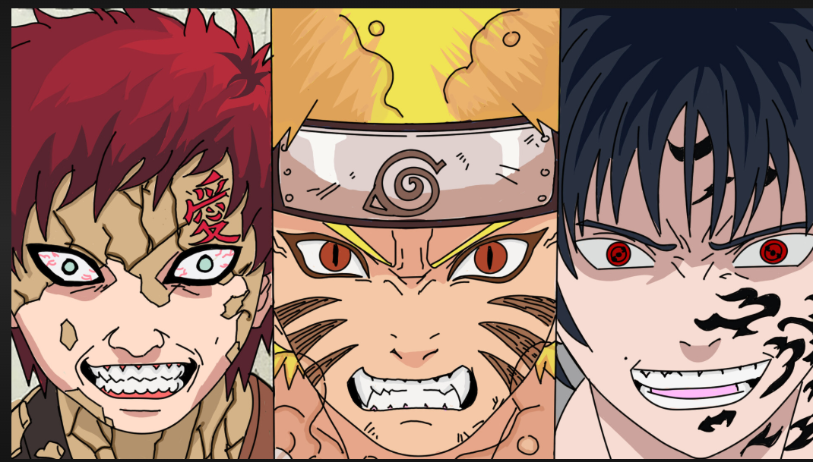
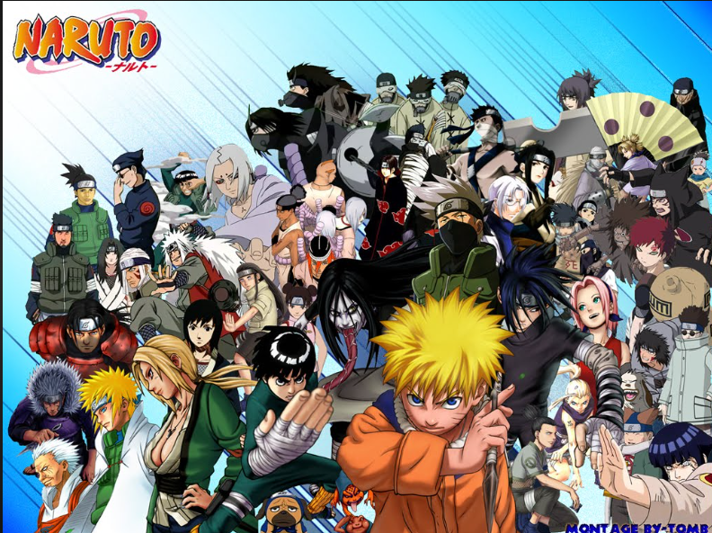
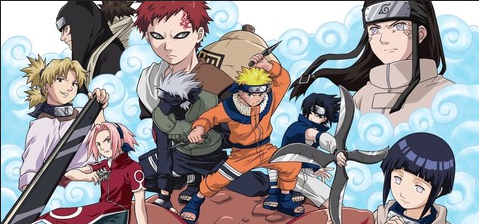

რაზეა დაფუძნებული? ნარუტო გარკვეულწილად შთაგონებულია იაპონური კულტურით, მითოლოგიითა და ისტორიით. მაგალითად: ნინძები რეალურად არსებობდნენ იაპონიაში, მაგრამ არ ჰქონდათ ზებუნებრივი ძალები. ისინი იყვნენ შპიონები, დამალვაში და ინფორმაციაზე მუშაობდნენ. ბევრი პერსონაჟის სახელი ან ბუნება უკავშირდება იაპონურ მითოლოგიას ან ბუნებრივ ელემენტებს. მაგალითად: ნარუტოს სახელი მოდის იაპონური საკვებისგან — ნარუტო მაკი, რომელიც არის თეთრი და ვარდისფერი სპირალი, ხშირად გვხვდება რამენში. რას ნიშნავს "ნარუტოს ნამდვილი ისტორია"? თუ შენ გულისხმობ: 👉 ნარუტოს ისტორია მანგაში ან ანიმეში სრული და დეტალურად — შემიძლია შენთვის დაწვრილებით მოვყვე, თავიდან ბოლომდე. 👉 თუ იყო მსგავსი ადამიანი ისტორიაში, ან შთაგონება — მაშინ არ არსებობს კონკრეტული ადამიანი, ვისზეც "ნარუტო" დაფუძნდა.

"ნარუტო" შეიქმნა როგორც პერსონალური ისტორია, რომელიც გამოხატავდა ავტორის ბავშვობის გამოცდილებებს, ოცნებებს და ფიქრობს "საკუთარი ადგილის" პოვნაზე.

ნინძას სამყაროს მეშვეობით ადამიანური ღირებულებების გადმოცემა

მეგობრობის ძალა,შინაგანი ბრძოლები მტრების შემწყნარებლობა სიძულვილის წრის გატეხვა
შეცდომების აღიარება